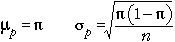
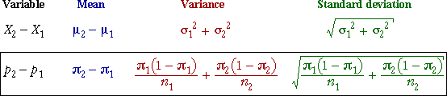

Difference between two proportions
Within each group, the sample proportion of successes, p, has a distribution that is approximately normal in large samples and has mean and standard deviation

Applying the general results about the difference between two independent random quantities:

Since the individual proportions are approximately normal (in large samples), their difference is also approximately normal: